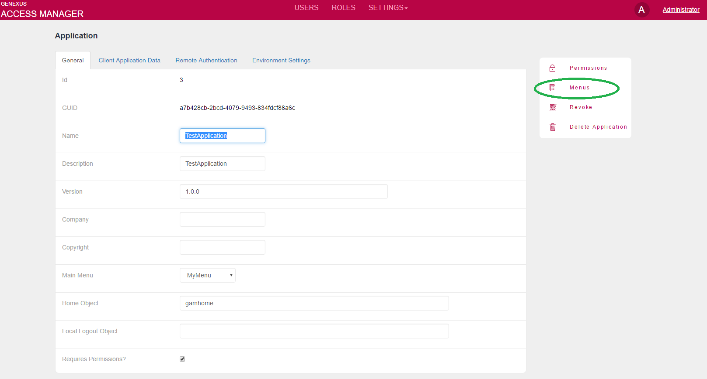
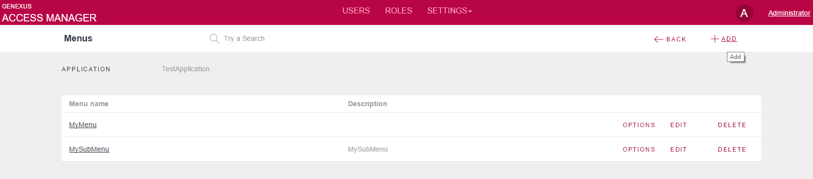
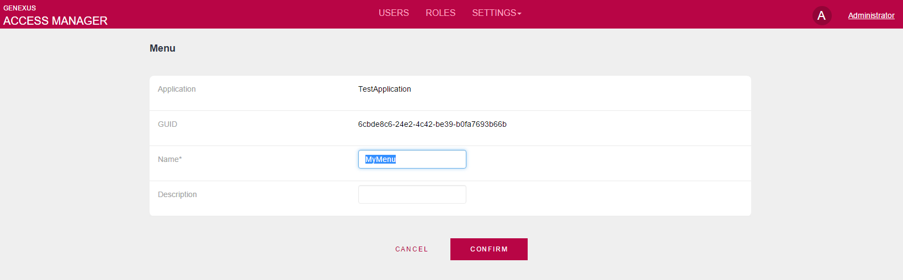
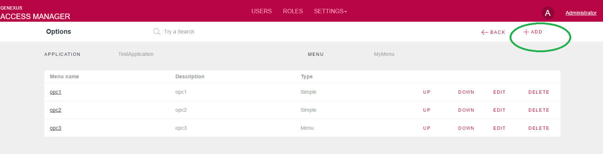
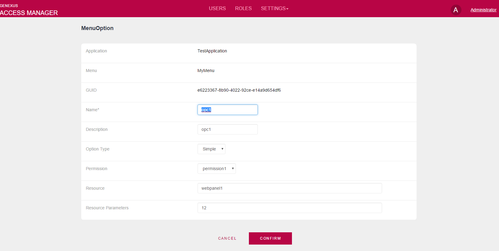
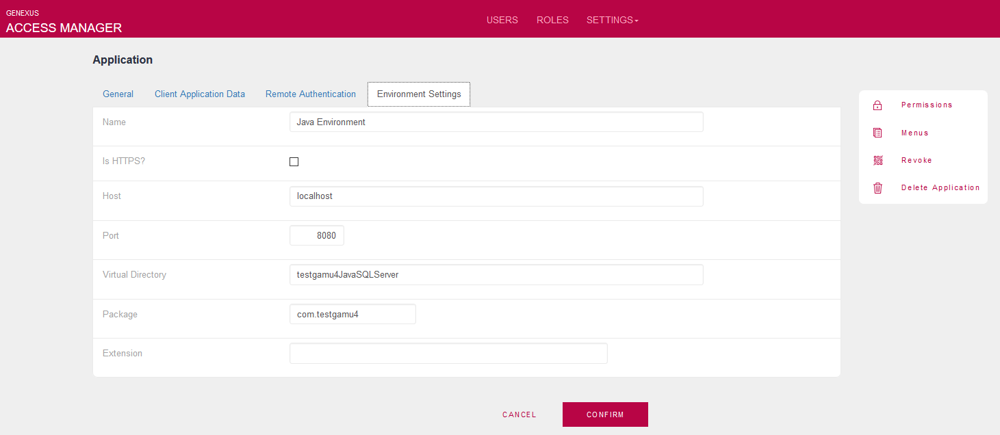

Using GeneXus Access Manager (GAM), your Web application menu can be defined (dynamically) at runtime, based on the GAM - Permissions and GAM - Roles of the user logged in.
The purpose is to filter the menu options according to the end user's permissions. Here, GAM returns the menu structure depending on the permissions of the user so that this structure may be loaded at runtime with any User Control.
The menu has to be defined for a particular GAM Application (multiple menus can be defined within a GAM Application).
A menu option will have a permission and a resource associated with it.
The menu may be set using the GAM - Web Backoffice or the GAM API for this purpose (see GAM - API for Menus).
1. Select the GAM application where you will define the Menu, and click on the Menus option at the right-hand side:

2. Click to add a Menu

3. Define the Menu name and its description

4. Add the Menu options

5. When you add a Menu option, you will get a dialog like this:

A menu option is associated with a GAM Permission and a resource.
The permission can be selected from a combo box which includes all the GAM permissions defined for that GAM Application, including the GAM - Automatic Permissions generated by GeneXus and the Permissions Created by the User.
Note that if it's a Permission created by the user, the permission is used only to decide whether to show the menu option to the user or not. The permission isn't checked at the execution of the resource itself.
A Resource is any GeneXus object that may be executed from the URL or a URL itself. Since GeneXus 16 upgrade 10, you can use a relative URL, e.g: /genexus.security.backend.gam_wwusers.
If the GeneXus object is inside a module, include the module in the Resource field, for example.: module1.webpanel1.
By default, the resource of a menu option which is associated with an Automatic Permissions generated by GeneXus is any Object that has that permission as Permission Prefix property.
The option type can be
The Environment settings of the Application influence in the behavior of this feature.

Since GeneXus 15 upgrade 5, the URL can be absolute or relative, depending on the UseAbsoluteUrlByEnvironment property value. For previous versions, it's always relative and only the Package and Extension Environment settings are considered.
Afterward, the menu is defined automatically, based on the permissions of the resources and the user's GAM - Roles. The end user will view only the Menu options linked to resources associated with the permissions that the user may access.
The menu may be displayed using any User Control. See HowTo: Display a GAM Menu using Jscookmenu UC.
The Menu of the GAM Web Backoffice is automatically defined in the GAM Backend Application. It is created when Creating the GAM repository for the first time from GeneXus.
Deployment: When the application is deployed to production using the Application Deployment tool, you have to add manually all the objects of your application related to the menu options.
| Backlinks | ||
| GAM - API for Menus | ||
| Toc:GeneXus Access Manager (GAM) | HowTo: Display a GAM Menu using Jscookmenu UC | Permissions Created by the User |